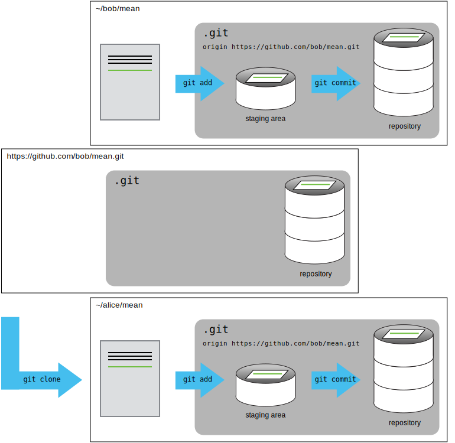

Collaborating
Questions
- How can I use version control to collaborate with other people?
Objectives
- Clone a remote repository.
- Collaborate by pushing to a common repository.
- Describe the basic collaborative workflow.
For the next step, get into pairs. One person will be the “Owner” and the other will be the “Collaborator”. The goal is that the Collaborator add changes into the Owner’s repository. We will switch roles at the end, so both persons will play Owner and Collaborator.
In the examples, the Owner’s username is bob and the collaborator is alice, but you’ll need to replace these with your own GitHub usernames.
The Owner needs to give the Collaborator access. On GitHub, click the “Settings” button on the right, select “Collaborators”, click “Add people”, and then enter your partner’s username.

To accept access to the Owner’s repo, the Collaborator needs to go to https://github.com/notifications or check for email notification. Once there she can accept access to the Owner’s repo.
Next, the Collaborator needs to download a copy of the Owner’s repository to her machine. This is called “cloning a repo”.
The Collaborator doesn’t want to overwrite her own version of mean.git, so needs to clone the Owner’s repository to a different location than her own repository with the same name.
To clone the Owner’s repo into her Desktop folder, the Collaborator enters:
git clone git@github.com:bob/mean.git ~/Desktop/bob-meanReplace ‘bob’ with the Owner’s username.
If you choose to clone without the clone path (~/Desktop/bob-mean) specified at the end, you will clone inside your own mean folder! Make sure to navigate to the Desktop folder first.

The Collaborator can now make a change in her clone of the Owner’s repository, exactly the same way as we’ve been doing before:
cd ~/Desktop/bob-mean
nano doc.txt
cat doc.txtThis is a script to calculate mean valuesgit add doc.txt
git commit -m "Added some documentation"[main 2408b26] Added some documentation
1 file changed, 1 insertion(+)
create mode 100644 doc.txtThen push the change to the Owner’s repository on GitHub:
git push origin mainEnumerating objects: 4, done.
Counting objects: 100% (4/4), done.
Delta compression using up to 12 threads
Compressing objects: 100% (2/2), done.
Writing objects: 100% (3/3), 325 bytes | 325.00 KiB/s, done.
Total 3 (delta 0), reused 0 (delta 0), pack-reused 0
To github.com:bob/mean.git
927b884..2408b26 main -> mainNote that we didn’t have to create a remote called origin: Git uses this name by default when we clone a repository. (This is why origin was a sensible choice earlier when we were setting up remotes by hand.)
Take a look at the Owner’s repository on GitHub again, and you should be able to see the new commit made by the Collaborator. You may need to refresh your browser to see the new commit.
In this episode and the previous one, our local repository has had a single “remote”, called origin. A remote is a copy of the repository that is hosted somewhere else, that we can push to and pull from, and there’s no reason that you have to work with only one. For example, on some large projects you might have your own copy in your own GitHub account (you’d probably call this origin) and also the main “upstream” project repository (let’s call this upstream for the sake of examples). You would pull from upstream from time to time to get the latest updates that other people have committed.
Remember that the name you give to a remote only exists locally. It’s an alias that you choose - whether origin, or upstream, or fred - and not something intrinstic to the remote repository.
The git remote family of commands is used to set up and alter the remotes associated with a repository. Here are some of the most useful ones:
git remote -vlists all the remotes that are configured (we already used this in the last episode)git remote add [name] [url]is used to add a new remotegit remote remove [name]removes a remote. Note that it doesn’t affect the remote repository at all - it just removes the link to it from the local repo.git remote set-url [name] [newurl]changes the URL that is associated with the remote. This is useful if it has moved, e.g. to a different GitHub account, or from GitHub to a different hosting service. Or, if we made a typo when adding it!git remote rename [oldname] [newname]changes the local alias by which a remote is known - its name. For example, one could use this to changeupstreamtofred.
To download the Collaborator’s changes from GitHub, the Owner now enters:
git pull origin mainremote: Enumerating objects: 4, done.
remote: Counting objects: 100% (4/4), done.
remote: Compressing objects: 100% (2/2), done.
remote: Total 3 (delta 0), reused 3 (delta 0), pack-reused 0
Unpacking objects: 100% (3/3), 305 bytes | 101.00 KiB/s, done.
From github.com:bob/mean
* branch main -> FETCH_HEAD
927b884..2408b26 main -> origin/main
Updating 927b884..2408b26
Fast-forward
doc.txt | 1 +
1 file changed, 1 insertion(+)
create mode 100644 doc.txtNow the three repositories (Owner’s local, Collaborator’s local, and Owner’s on GitHub) are back in sync.
In practice, it is good to be sure that you have an updated version of the repository you are collaborating on, so you should git pull before making our changes. The basic collaborative workflow would be:
- update your local repo with
git pull origin main, - make your changes and stage them with
git add, - commit your changes with
git commit -m, and - upload the changes to GitHub with
git push origin main
It is better to make many commits with smaller changes rather than of one commit with massive changes: small commits are easier to read and review.
:::{.callout-challenge}
Switch Roles and Repeat
Switch roles and repeat the whole process.
Challenge: Review Changes
- The Owner pushed commits to the repository without giving any information to the Collaborator.
- How can the Collaborator find out what has changed with command line? And on GitHub?
Solution
On the command line, the Collaborator can use git fetch origin main to get the remote changes into the local repository, but without merging them. Then by running git diff main origin/main the Collaborator will see the changes output in the terminal.
On GitHub, the Collaborator can go to the repository and click on “commits” to view the most recent commits pushed to the repository.
Key points
git clonecopies a remote repository to create a local repository with a remote calledoriginautomatically set up.”
All materials copyright Sydney Informatics Hub, University of Sydney